ข้อมูลจาก Broadcom ยืนยัน iPhone 12 อาจจะเปิดตัวในเดือนตุลาคม
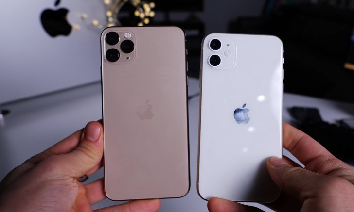ในตอนแรก iPhone 12 จะมีตารางเปิดตัวในช่วงเดือนกันยายนนี้ ตามประวัติการเปิดตัวของปีก่อน ๆ แต่เนื่องจากวิกฤติ COVID-19 ซึ่งมีผลกระทบโดยตรง ทำให้ปีนี้จะมีการเปิดตัว iPhone รุ่นประจำปีช้ากว่าปีก่อน ๆ ไปสักหน่อย (มีข่าวลือว่ากำหนดเดิมจริง ๆ คือวันที่ 8 กันยายนนี้แล้ว)
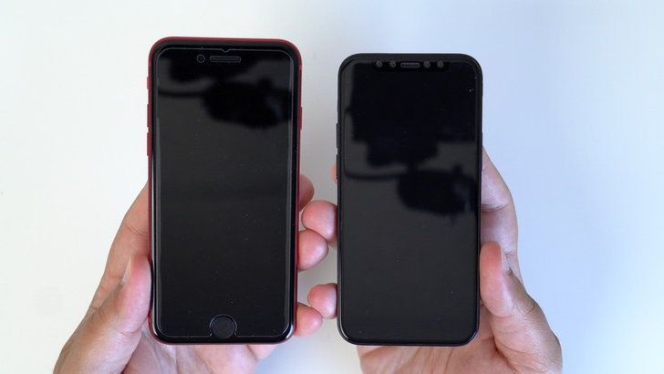ในตอนแรก iPhone 12 จะมีตารางเปิดตัวในช่วงเดือนกันยายนนี้ ตามประวัติการเปิดตัวของปีก่อน ๆ แต่เนื่องจากวิกฤติ COVID-19 ซึ่งมีผลกระทบโดยตรง ทำให้ปีนี้จะมีการเปิดตัว iPhone รุ่นประจำปีช้ากว่าปีก่อน ๆ ไปสักหน่อย (มีข่าวลือว่ากำหนดเดิมจริง ๆ คือวันที่ 8 กันยายนนี้แล้ว)
ล่าสุด Broadcom ผู้ผลิตชิ้นส่วน iPhone ให้กับ Apple มีการออกมาเปิดเผยว่ากำลังเร่งผลิตชิ้นส่วนเพื่อส่งออกให้ทันก่อนไตรมาสสุดท้ายของปีนี้ ซึ่งนัดวิเคราะห์ก็เข้าใจว่ารายการผลิตนี้จะต้องหมายถึง iPhone 12 ของ Apple อย่างแน่นอน ทำให้เป็นไปได้ว่า iPhone 12 น่าจะเปิดตัวในช่วงเดือนตุลาคมที่จะถึงนี้ (ไตรมาสสุดท้ายของปี เริ่มจากเดือนตุลาคม)
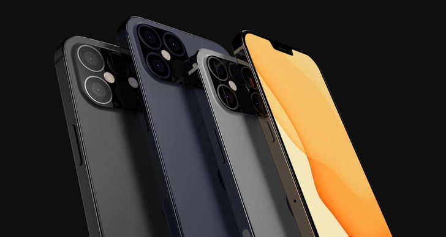
จากข้อมูลทั้งหมดที่เราทราบ Apple จะเปิดตัว iPhone 12 ทั้งหมด 4 รุ่น ด้วยกัน รวมทั้งหมด 2 ขนาดหน้าจอ 5.4 นิ้ว และ 6.7 นิ้ว ซึ่งเราก็น่าจะได้ยินข่าวกำหนดการวันเปิดตัวจาก Apple เร็ว ๆ นี้ ก่อนสิ้นเดือนของเดือนกันยายน
Apple ยอม!! เลื่อนฟีเจอร์ “ป้องกันการติดตามผู้ใช้เพื่อโฆษณา” ไปเปิดต้นปีหน้า
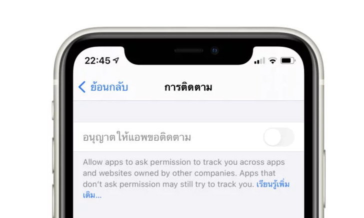ใน iOS 14 ถือว่าเป็นหนึ่งใน OS ที่เน้นอัปเกรดเรื่องความปลอดภัยเป็นหลัก ซึ่งก็มีหลายฟีเจอร์ที่เข้ามาเสริมเพื่อความโปร่งใส ปลอดภัย และมีความเป็นส่วนตัวให้กับผู้ใช้ iOS 14 มากยิ่งขึ้น
หนึ่งในฟีเจอร์ที่เป็นที่หนักใจของนักพัฒนาแอปรายใหญ่อย่าง Facebook ก็คือ ฟีเจอร์ “ควบคุม/ป้องกันการติดตามผู้ใช้เพื่อการโฆษณา” ที่ต้องออกมาอธิบายให้นักพัฒนาอื่น ๆ ว่าโฆษณาอาจจะเข้าถึงผู้คนได้น้อยลงกว่า 50% ซึ่งถือเป็นผลกระทบที่ค่อนข้างรุนแรงสำหรับผู้ที่ลงโฆษณาผ่านแพลตฟอร์มต่าง ๆ
ล่าสุดมีรายงานว่า Apple จะเลื่อนฟีเจอร์ดังกล่าวไปเปิดใช้ประมาณต้นปีหน้า เพื่อให้นักพัฒนาได้มีเวลาปรับปรุงแอปในหลาย ๆ ส่วนที่จะมีผลกระทบจากฟีเจอร์นี้ในวงกว้าง หลังจาก iOS 14 ถูกปล่อยสู่ผู้ใช้ทั่วไปแล้ว
iOS 14 คาดว่าจะปล่อยให้ผู้ใช้ทั่วไปสามารถใช้งานได้ในเดือนกันยายน หรือตุลาคมนี้
สื่อนอกรายงาน Apple Watch รุ่นใหม่ และรุ่นราคาถูก กำลังอยู่ในขั้นตอนการผลิตแล้ว
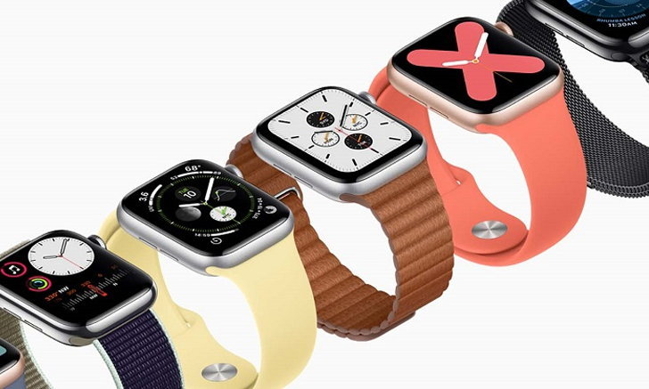iPhone 12 น่าจะเปิดตัวในเดือนตุลาคนี้ ตามการคาดการณ์ของนักวิเคราะห์ และประวัติการเปิดตัวจากปีก่อน ๆ ซึ่งในวันเปิดตัวนอกจากจะมี iPhone 12 ด้วยแล้ว ยังมีข้อมูลของ iPad Air รุ่นใหม่ รวมถึง Apple Warch Series 6 อีกด้วย
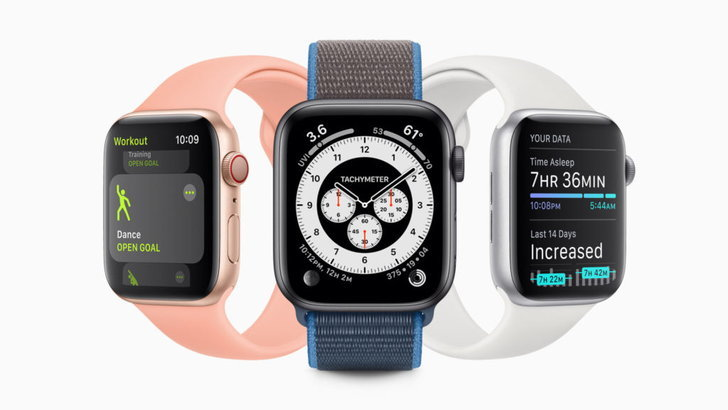DigiTimes รายงานว่าเทคโนโลยีการผลิตบอร์ด SiP หรือ System in Package จะเป็นที่นิยมในปีหน้าอย่างมาก และยังมีการพูดถึง Apple Watch รุ่นใหม่ และ AirPods รุ่นที่ 3 อีกด้วย
โดยทาง ASE หรือ Advanced Semiconductor Engineering หนึ่งในผู้ผลิตชิ้นส่วนฮาร์ดแวร์ให้กับ Apple กำลังเร่งผลิตชิปสำหรับใช้ใน Apple Watch ตัวใหม่อยู่อย่างน้อยถึง 2 โมเดล
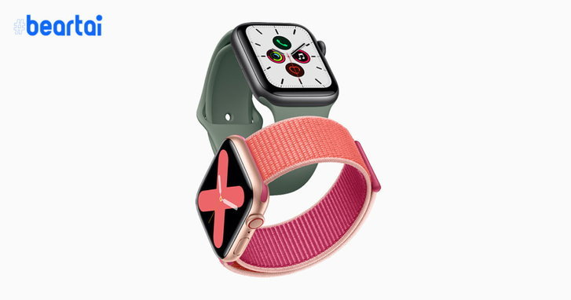Apple Watch ตัวแรกน่าจะเป็น Apple Watch Series 6 ที่เราคาดหวังกัน และอีกรุ่นนึงจะเป็นการแตกไลน์ Apple Watch โดยการเปิดตัว Apple Watch ราคาถูกตัวแรก สำหรับนำมาแทนที่ Apple Watch Series 3 ที่เก่ามากแล้ว และเพื่อเป็นการแย่งชิงตลาดสมาร์ตวอชต์จาก Fitbit ที่มีพื้นที่สัดส่วนในตลาดพอสมควร
Toyota Supra A80 : ตำนานรถซิ่งที่ไม่มีวันเก่าของ "พอล วอล์คเกอร์"
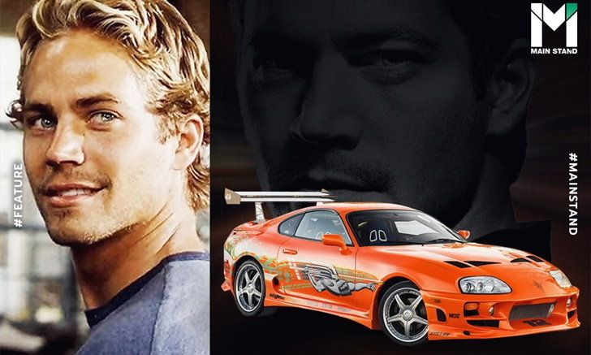"ถ้าถูกใจก็ไม่มีคำว่าแพง" คำๆ นี้จริงเสียยิ่งกว่ายิ่งจริง เพราะของบางอย่างมูลค่าไม่ได้แปรผันและตกลงตามเวลาแต่อย่างใด กลับกันเมื่อเวลาผ่านไปพวกมันกลับขลังขึ้น และเป็นที่ต้องการมากขึ้นอย่างน่าประหลาด
นี่คือเรื่องราวของรถซิ่งสายพันธ์ญี่ปุ่นอย่าง Toyota Supra Mk IV รหัสตัวถัง A80 รถที่จัดจ้านด้วยเทคโนโลยีในยุคนั้น และยังถูกเสริมคมด้วยสตอรี่ "รถพระเอก" จนสุดท้ายทำให้รถที่ออกวางขายมาแล้ว 30 ปี กลับมีราคาแพงกว่ารถออกใหม่ใสกิ๊งในปี 2020 เสียอีก
ติดตามเรื่องราวของ Toyota Supra หนึ่งในตำนานรถซิ่งได้ที่นี่
จุดกำเนิดจากญี่ปุ่นของจะแพงหรือเป็นที่ต้องการนั้น ย่อมจำเป็นจะต้องมีส่วนประกอบที่สำคัญที่สุดข้อหนึ่งนั่นคือ "สตอรี่" หรือเรื่องราวที่มาที่ไปของสิ่งเหล่านั้น ซึ่งสตอรี่นี้เองที่ถึงแม้จะเป็นนามธรรม แต่มันกลับร้อยเรียงเรื่องราวทำให้ของชิ้นหนึ่งเพิ่มมูลค่าขึ้นมาได้อย่างน่าประหลาด โดยเฉพาะของด้าน "จิตใจ"
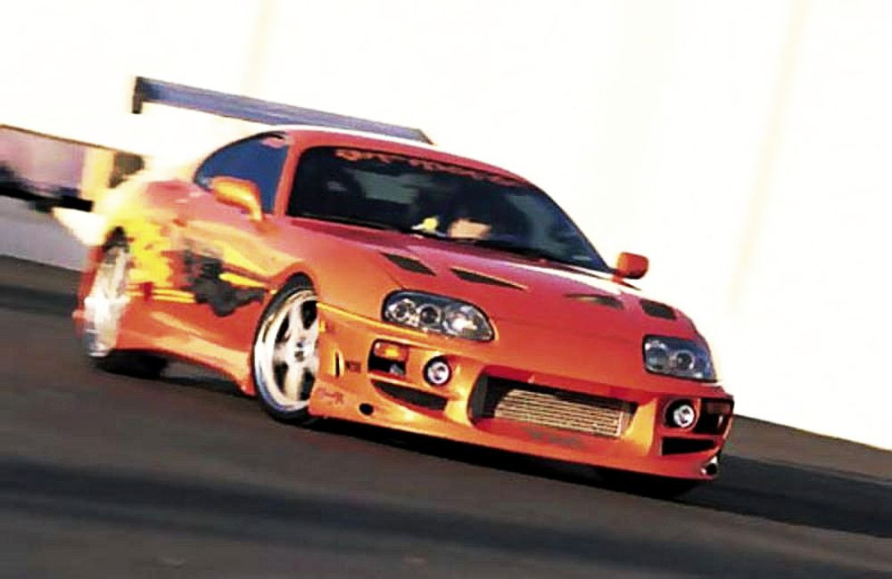ว่ากันว่า Toyota Supra A80 คือรถที่ใครได้ดูแฟรนไชส์ภาพยนตร์ Fast And Furious โดยเฉพาะภาคแรก The Fast and the Furious ต้องติดใจหรือต้องมนต์ในความเท่ของมัน ซึ่งแน่นอนว่าส่วนประกอบสำคัญคือ การที่ผู้กุมพวงมาลัยรถคันนี้คือ ไบรอัน โอคอนเนอร์ (แสดงโดย พอล วอล์คเกอร์) หนึ่งในพระเอกของเรื่องนั่นเอง แต่มันต้องมีเหตุผลและที่มาสิว่าทำไม ไบรอัน จึงเลือกขับรถญี่ปุ่นคันนี้ แทนที่จะขับรถสัญชาติอเมริกันเช่นเดียวกันอย่าง เชฟโลเร็ต หรือ ฟอร์ด กันแน่?
Toyota Supra มีประวัติมายาวนาน ไม่ใช่แค่จุดเริ่มต้นจากเรื่อง Fast And Furious แต่ต้องย้อนกลับไปในปี 1978 ณ นาทีแรกที่เปิดตัว Toyota Supra (ในขณะนั้นเป็นรุ่นย่อยของ Toyota Celica) พยายามบอกให้ทุกคนในโลกรู้ว่า มันเกิดมาเพื่อเป็นรถซิ่ง
Toyota Supra Mk I รหัสตัวถัง A40-A50 มากับเครื่องยนต์เบนซิน 2.0 กับ 2.6 ลิตร 6 สูบเรียง 12 วาล์ว 125 แรงม้า และ 111 แรงม้าตามลำดับ พร้อมระบบหัวฉีดไฟฟ้า ซึ่งถือว่าใหม่มากในยุค 70's และสิ่งที่ทำที่ทำให้นักซิ่งทั้งหลายติดอกติดใจ คือเทคโนโลยีที่จัดเต็มทั้ง กระจกไฟฟ้า, ล็อกประตูไฟฟ้า พ่วงด้วยระบบควบคุมความเร็วอัตโนมัติ เรียกได้ว่าเฟี้ยวกว่านี้ก็ไม่มีอีกแล้วในยุคนั้น
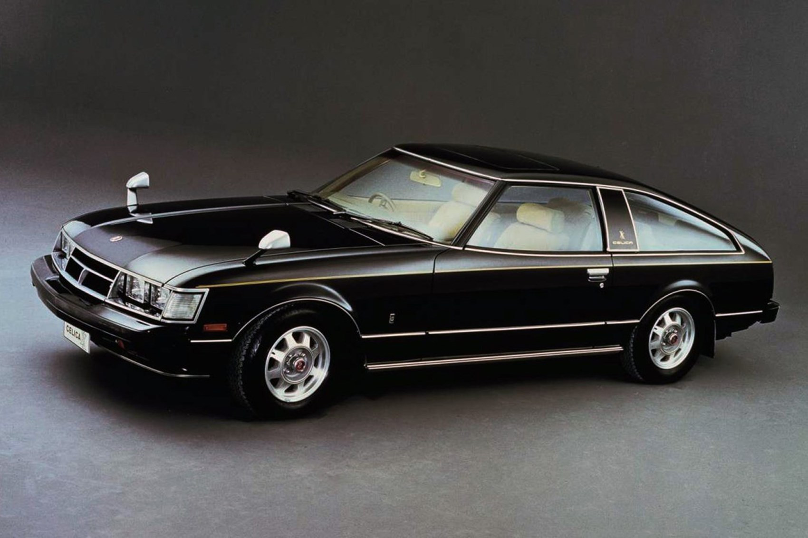อย่างไรก็ตามปัญหาของ Toyota Supra คือมันไม่เป็นที่นิยมของชาวญี่ปุ่นมากเท่าไรนัก ถึงจะซื้อ ส่วนใหญ่ก็ซื้อรุ่นเครื่องยนต์ขนาด 2.0 ลิตรมากกว่า อันมีเหตุผลมาจากเรื่องของภาษีตามขนาดเครื่องยนต์และตัวถัง ซึ่งต่างกันเพียงนิดเดียวก็ต้องเสียเงินเพิ่มต่างกันมาก ทาง Toyota จึงแก้ปัญหาด้วยการผลักดันรถซิ่งคันนี้ออกนอกประเทศ ด้วยการส่งออก Toyota Supra ตัวเครื่อง 2.6 ลิตรไปขายในต่างประเทศ ก่อนจะเปลี่ยนเครื่องใหม่ ใส่เครื่อง 2.8 ลิตร 118 แรงม้า ที่สามารถทำอัตราเร่ง 0-97 กม./ชม. ได้ใน 10.24 วินาที อาจจะไม่เร็วนักเมื่อเทียบกับรถยุคนี้ แต่เป็นเหตุผลที่ทำให้สายซิ่งเริ่มจะชื่นชอบใน Toyota Supra มากขึ้นเรื่อยๆ
จากนั้น Toyota Supra ก็ต่อยอดด้วยทายาทรุ่นใหม่มาเรื่อยๆ ได้แก่ Mk 2 รหัสตัวถัง A60 ในปี 1981, Mk 3 รหัสตัวถัง A70 ในปี 1986 ซึ่งเป็นโฉมแรกที่ใช้ชื่อ Supra เพียวๆ จนถึง Mk 4 รหัสตัวถัง A80 ที่เป็นจุดเปลี่ยนที่ทำให้รถญี่ปุ่นรุ่นนี้ "ดังระเบิด" ขึ้นมาอย่างรวดเร็ว
รถแรง ปะทะ หนังดังรถที่ได้รับความนิยมอยู่แล้ว จำเป็นจะต้องสร้างความแตกต่างและพัฒนาการออกมาให้เห็นในซีรี่ส์ใหม่ เช่นเดียวกันกับ Toyota Supra Mk IV A80 นั้น ถือว่าเปลี่ยนกันตั้งแต่ภาพลักษณ์ เพราะเริ่มมีการใช้ไฟหน้าแบบปกติ หลักจากรุ่น A60 กับ A70 เป็นไฟหน้าแบบป๊อปอัพ ยกขึ้น-ลง (สาเหตุหนึ่งมาจากมาตรฐานความปลอดภัย) พร้อมทรวดทรงที่แม้จะมนขึ้น แต่ก็ดูมีมัดกล้าม เห็นแล้วน่ายำเกรง
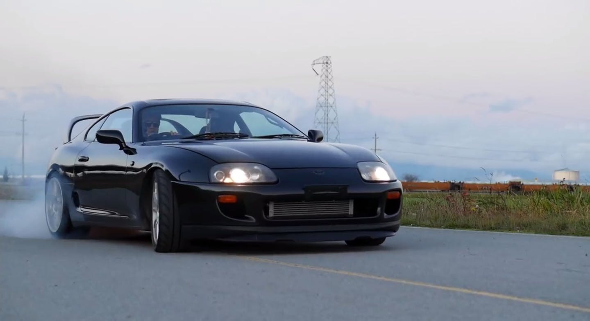จุดเด่นสุดจี๊ดจริงๆ คือการยกเครื่องใหม่ ใส่เครื่องยนต์ระดับตำนานอย่าง 2JZ 6 สูบเรียง ความจุ 3.0 ลิตร (ด้วยเหตุนี้ ทำให้ปกติเราจะเรียก Supra โฉมนี้ในรหัสตัวถัง JZA80) และอัดแรงม้าขึ้นอีกด้วยเทอร์โบคู่ ทำอัตราเร่ง 0-97 กม./ชม. ในเวลาเพียง 4.6 วินาที กับความเร็วสูงสุด 257 กม./ชม. ซึ่งมากกว่าที่กฎหมายกำหนดไว้ (180 กม./ชม. ในญี่ปุ่น, 250 กม./ชม. ในทวีปยุโรปและอีกหลายประเทศ) เสียอีก
ทั้งรูปลักษณ์และความเร็วที่ชักจะเข้าที่เข้าทาง อีกทั้งยังมีแฟนคลับยกมือเชียร์ ทำให้ Toyota Supra A80 ถูกจับเข้าไปอยู่ในเรื่อง Fast And Furious ภาคแรก ไม่เพียงเท่านั้น มันยังรับบทสำคัญด้วยการเป็นยานพาหนะคู่ใจของ ไบรอัน โอคอนเนอร์ เจ้าหน้าที่ตำรวจที่ต้องแฝงตัวเข้าไปอยู่ในแก๊งรถซิ่ง ซึ่งอย่างที่ทุกคนรู้กันถ้าแฟรนไชส์ Fast หยุดแค่ภาคแรก Toyota Supra อาจจะไม่ดังขนาดนี้ ทว่าเมื่อ Fast & Furious กลายเป็นหนังฟอร์มยักษ์ที่ทำเงินถล่มทลายทุกภาค จึงเป็นเหตุผลสำคัญที่ทำให้ Toyota Supra กลายเป็นพระเอกที่กลุ่มคนรักรถอยากได้ลองควบดูสักครั้ง
ใน The Fast and the Furious ไบรอัน ซึ่งเป็นนักซิ่งสายนิยมรถจากประเทศญี่ปุ่นมาแต่ไหนแต่ไร ได้ซากรถ Toyota Supra โฉม Targa (ถอดหลังคาได้) มาประกอบใหม่ เพื่อใช้หนี้ "รถซิ่ง" กับ ดอมินิก ทอเร็ตโต้ (แสดงโดย วิน ดีเซล) ก่อนที่ ไบรอัน, ดอม และพรรคพวกจะจัดการทำให้มันเร็วยิ่งกว่าเดิม ด้วยการเปลี่ยนเครื่องยนต์จาก 2JZ-GE ไม่มีเทอร์โบ ที่ติดมากับซาก เป็น 2JZ-GTE เทอร์โบคู่ พร้อมโมดิฟายชุดใหญ่ เปลี่ยนใส่เทอร์โบเดี่ยวลูกเขื่อง เสริมด้วยไนตรัส จนแรงถึงขั้นฉีก เฟอร์รารี่ ซูเปอร์คาร์ตราม้าลำพองจากอิตาลีแบบขาดกระจุย
ซึ่งความแรงนี้ไม่ใช่เรื่องล้อกันเล่น เพราะ พอล วอล์คเกอร์ ผู้รับบท ไบรอัน โอคอนเนอร์ ที่หลายคนมักจะจำภาพติดตาเวลาขับ Nissan GT-R ทั้งรหัสตัวถัง R34 (ยังอยู่ในตระกูล Skyline) และ R35 (แยกชื่อมาทำตลาดเดี่ยวๆ) มากกว่า ยังยอมรับว่า Toyota Supra ในภาคแรกนั้นขับมันที่สุด และเป็นรถอันดับ 1 ในแฟรนไชส์ Fast ของเขาเลยทีเดียว

"ผมต้องบอกเลยว่าผมชอบเครื่อง 2JZ ที่อยู่ใน Toyota Supra จริงๆ มันเป็นเครื่องยนต์ที่สนุกสะใจจนไม่รู้จะอธิบายยังไง ส่วนตัวผมมีรถรุ่นนี้ที่ผลิตในปี 1995 คันนึง และรถมันวิ่งไปแค่ 30,000 ไมล์เท่านั้นเอง ผมเลยสนุกกับการปรับแต่งและทำส่วนอื่นๆ เพิ่มขึ้นอีก เปลี่ยนโฉมมันจนเป็นรถที่เจ๋งโคตรๆไปเลย" นี่คือสิ่งที่ พอล วอล์คเกอร์ ให้สัมภาษณ์กับ PASMAG
สาเหตุที่ทำให้ Toyota Supra กลายเป็นรถสายซิ่งยอดนิยม ส่วนหนึ่งก็ต้องยอมรับว่า แฟรนไชส์ Fast มีส่วนสำคัญอย่างมาก เพราะเมื่อหนังสร้างภาค 2-3-4 และต่อมาเรื่อยๆ จนถึงภาค 9 ผู้สร้างพยายามเน้นถึงความเป็นครอบครัว ไม่ใช่แค่การแข่งขันรถแข่งเหมือนแต่ก่อน แต่มันหมายถึงมิตรภาพ การช่วยเหลือเกื้อกูลกันในแก๊ง ซึ่งเหตุผลทั้งหมดเปลี่ยนให้ภาพลักษณ์ของรถหลายคันในเรื่องนี้เป็นตัวแทนของความเท่ และเพิ่มความเป็นรถของลูกผู้ชายขึ้นมาโดยปริยาย